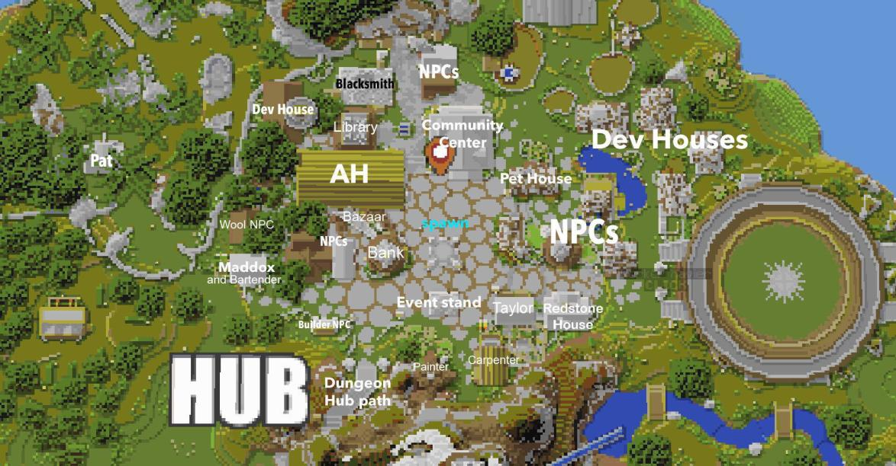
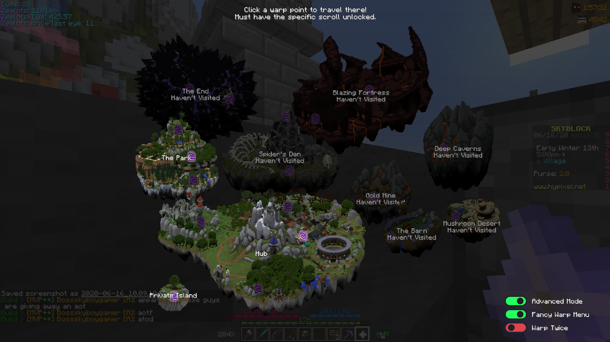

Gameplay
SkyBlock initially starts players on a small island. Players can use the resources on this island to bridge towards another nearby island, which contains a Jerry NPC, a Tier I Cobblestone Minion, and a portal to the Hub Island, a place containing several areas and features to progress in the game.
Coins
Coins are the main currency of SkyBlock, and are used to purchase shop items, bid on auctions, and purchase other items from other NPCs. Coins can be obtained by killing mobs, completing SkyBlock quests, selling items, and earning interest from the Bank. Players will lose half of their held coins if they die in any non-Private Island, or die on their Private Island from causes excluding falling into the void by the players themselves.
Statistics
Health
Health serves at the amount of damage the player can sustain before dying. Health starts off at 100, but the base stat can be upgraded with Skills, Fairy Souls, and specific Quests. When a player's Health reaches 0, they will die and lose half of their coins.
Defence
Defense reduces the damage taken by Health from mobs and players. Base Defense can be upgraded with Skills and Fairy Souls.
Mana
Mana, also known as Intelligence in statistics, is an aspect that allows players to use skills applied to their weapon. Mana initially has a limit of 100, but base Intelligence can be upgraded with Skills to increase the maximum Mana. If a player does not have enough Mana points for a skill, they will have to wait until the Mana regenerates.
Strength
Strength affects the overall damage dealt to mobs or players. The base Strength stat can be upgraded with Skills and Fairy Souls.
Speed
Speed affects the velocity of the player when moving. The base Speed stat can be upgraded with Fairy Souls.
Crit Chance/Damage
Crit Chance and Crit Damage are stats that affect the power and frequency of Critical hits on mobs or players. Base Crit Chance can be upgraded with Skills, and base Crit Damage can be upgraded with specific quests. If a player lands a critical hit, the damage indicator will be colored red to white, and stars will be next to the amount of damage.
Mechanics
Bank
The Bank is a system and location in the SkyBlock Hub Island. Players can go to the bank to deposit or withdraw coins, and players can also see the 10 most recent transactions in the Bank. The bank also rewards 2% interest to players for keeping their coins in the bank, which is given every 31 real time hours. The Bank can be accessed elsewhere using the Personal Bank in the SkyBlock Menu, or the Personal Bank item. The Personal Bank initially has a cooldown that can be reduced to no cooldown by unlocking Emerald collections and paying coins to the Guy NPC found west of the Hub Island Bank.
Collections
Collections are progressive systems for collecting vanilla items. They can be used to unlock items, crafting recipes, or experience for Skills. These Collections can only be progressed by collecting items though manual means, or collecting items from minions. Collections are split into five different categories of items, those being Farming, Mining, Combat, Foraging, and Fishing.
Minions
Minions are automatic workers unlocked in the first level of any collection. They can be placed on an island and require a working space fit to their preference to work. Minions can be upgraded with the items they are tasked to collect, and upgrading Minions will increase their working speed and inventory space. Minion Upgrades and other items are available for Minions to create specific perks, such as compacting items, automatically selling items, and increasing storage.
Quests
Quests are tasks assigned to players in different areas. These Quests usually give players useful items or other rewards. Incomplete and ongoing Quests can be viewed through the Quest Log in the SkyBlock Menu, and ongoing Quests will show the next step to progress the Quest to completion.
Reforaging
Reforging is a process in which players can give items to the Blacksmith NPC in the Hub Island and gain permanent stat upgrades on their weapons. These upgrades usually affect offensive stats, though they can also affect stats like Intelligence. Reforges cost coins to complete, and the price varies by the rarity of the item. Armor, Weapons, and Talismans can be reforged at the Blacksmith NPC.
Talismans
Talismans are collectible items that come with a unique perk. These Talismans can be collected through shops, special Quests, or Collection Recipes. Talismans can also be reforged at the Blacksmith NPC to receive permanent perks.
Hub island
Shop
Shops are structures with NPCs placed around the hub's spawn point. These shops are split into several categories of items, with an NPC corresponding to the shop's contents. Players can also sell almost any item at any shop by clicking on the item they desire to sell. Shops have limits on some collection items where players can only purchase 640 of a single item each day.
Areas
There are several areas in the Hub Island, each with their own items to collect. These areas contain basic, low resources, though they usually have portal frames that players can go through to access islands with extensive resources.
Coal Mine
The Coal Mine is an area north of the Hub Island spawn. It contains stone and coal, which can count towards collections when mined. The edge of the Coal Mine contains a portal frame leading to the Gold Mine, which contains more extensive ores.
Graveyard
The Graveyard is an area northwest of the Hub Island spawn. It contains Zombies and an entrance to the Coal Mine with strong enemies. The Graveyard also contains the Pat NPC, who is one of the two Flint Bros NPCs, and who can be clicked to purchase Flint and Gravel. The edge of the Graveyard contains a portal frame leading to the Spider's Den, with more extensive items.
Forest
The Forest is an area west of the Hub Island spawn. It contains Oak Wood trees and fallen Oak Wood logs, which can be mined and regenerated shortly after. The edge of the Forest contains a portal frame leading to The Park, with many different types of wood.
Ruins
The Ruins is an area southwest of the Hub Island spawn. It contains a broken building housing many aggressive Wolves.
High level
High Level is an open area south of the Hub Island spawn. It contains hostile mobs like Skeletons.
Wilderness
The Wilderness is a forest southeast of the Hub Island spawn. It contains several trees with stairs to climb, and is also the home of Tia the Fairy, an NPC that gives permanent stat boosts for every 5 Fairy Souls collected. The Wilderness also contains the secret Dark Auction, with exclusive items that are auctioned to all players in the area during Dark Auction events.
Fisherman's Hut
Fisherman's Hut is a fishing area east of the Hub Island spawn. It contains a wide Fishing area, and the Fisherman NPC, which tasks players to complete a Quest and earn an exclusive Fishing Rod.
Colosseum
The Colosseum is a combat area east of the Hub Island spawn. It contains a large battle space and the Gladiator NPC, who allows players to battle one another in a 1v1 queue.
Farm
The Farm is an area northeast of the Hub Island spawn. It contains large and regenerating farming lands filled with Wheat, and also has the Farmer NPC, who will start a Quest upon being interacted with. The edge of the Farm contains a portal frame leading to The Barn, a farm area with a variety of crops and farm animals.
Islands
SkyBlock has several islands linked to the Hub Island, each with their own items and features. Islands can be accessed through portal frames at the edges of the Hub Island, which will then lead the player into another server for that respective island.
The Barn
The Barn is a farming island located at the edge of the Farm area in the Hub Island. The Barn contains several crops and farm animals that are constantly regenerated. Crops include wheat, potatoes, and carrots, while the animals include chicken, cows, and pigs. The crops can be destroyed by anyone, and the animals can also be killed by anyone. The edge of The Barn contains a traveling frame leading to the Mushroom Desert.
Mushroom Desert
Mushroom Desert is an island that can be accessed from The Barn. The Mushroom Desert contains several different crops and animals not found in the Barn, with crops including Mushrooms and Sugar Cane, and animals including Sheep and Rabbits.
Gold Mine
The Gold Mine is an island accessed from the end of the Coal Mine area. It contains several different NPCs with different features, and also contains ores like Iron and Gold. The edge of the Gold Mine contains a portal frame leading to the Deep Caverns.
Deep Caverns
The Deep Caverns are an island accessed from the Gold Mine. The Deep Caverns contain several levels with different ores and unique enemies, which include Sneaky Creepers, Lapis Zombies, Slimes, Diamond Zombies, and Diamond Skeletons.
Dwarned Mines
The Dwarven Mines are a collection of areas where players can mine mithril and titanium. Events happen every 20 minutes, including Goblin Raid and Raffle.
Spider's Den
The Spider's Den is an island accessed from the Graveyard. It contains normal Skeletons and many unique types of Spiders, all with different abilities. A cave opening in the Spider's Den contains a portal frame leading to the Blazing Fortress, and the edge of the Spider's Den contains a portal frame leading to The End.
Blazing Fortress
The Blazing Fortress is an island accessed from the Spider's Den. It contains mobs such as Pigmen and Magma Cubes, and also contains the exclusive Magma Boss event.
The End
The End is an island accessed from the Spider's Den. It contains different types of End mobs, and also has the Dragon event that contains exclusive rewards.
The Park
The Park is an island accessed from the Forest area in the Hub Island. It contains many different sections with different types of wood and NPCs, which may offer quests.
Skills

Skills are progressive gameplay aspects that can be upgraded by completing actions or collecting items related to the skill. Upgrading skills will increase a player's chance of using the perk given with the skill, and they will also earn bonus statistics and coins.
Farming
Farming is a skill related to farming actions. The skill can be progressed by harvesting farm crops (e.g. wheat, carrots, potatoes) and collecting farm animal droppings from minions. Each farming level increases the Farmhand skill by 4%, which gives a chance to collect double crops from harvesting. This skill also unlocks access to The Barn at level I, and the Mushroom Desert at level V, and gives extra Health points with each level.
Mining
Mining is a skill related to mining actions. This skill can be progressed by mining ores and blocks usually found in caves, and collecting ores from minions. Each mining level increases the Spelunker skill by 4%, which gives a chance to collect double ores from mining. This skill also unlocks access to the Gold Mine at level I, and the Deep Caverns at level V, and gives extra Defense points with each level.
Combat
Combat is a skill related to combat actions. This skill can be progressed by killing hostile mobs and collecting hostile mob droppings from minions. Each combat level increases the Warrior skill by 4%, which increases the damage dealt to mobs. This skill also unlocks access to the Spider's Den at level I, the Blazing Fortress at level V, and The End at level XII, and gives 1% more Crit Chance with each level, which increases the damage dealt when attacking by a significant amount.
Foraging
Foraging is a skill related to wood-chopping actions. This skill can be progressed by chopping down wood in the Forest or The Park, and also by collecting wood from minions. Each foraging level increases the Logger skill by 4%, which gives a chance to obtain double logs from chopping wood. This skill also grants access to the sections in The Park at different levels, with the Birch Park at level I, Spruce Woods at level II, Dark Thicket at level III, Savanna Woodland at level IV, and Jungle Island at level V. Each level of Foraging grants permanent Strength points, with its values increasing the higher the level.
Fishing
Fishing is a skill related to fishing actions. This skill can be progressed by fishing for items in ponds and by collecting fishing-related items from minions. Each fishing level increases the Treasure Hunter skill by 0.2%, which gives a chance to find treasure when fishing. This skill also allows players to find different sea creatures when fishing, and gives extra Health points with each level.
Enchanting
Enchanting is a skill related to enchantment actions. This skill can be progressed by enchanting or combining items using Enchanting Tables or Anvils respectively. Each Enchanting level increases the Conjurer skill by 4%, which increases earned experience orbs, and Enchanting levels also give extra Intelligence.
Alchemy
Alchemy is a skill related to brewing actions. This skill can be progressed by brewing potions. Each Alchemy level increases the Brewer skill by 1%, which increases the duration of brewed potions, and Alchemy level also give extra Intelligence.
Carpentry
Carpentry is a cosmetic skill related to crafting actions. This skill can be progressed by crafting any item with the Crafting Table. Each Carpentry level unlocks new furniture crafting recipes, which can be placed anywhere on the player's private island. Carpentry is maxed at level 3 for users without ranks, and XP multipliers are put into place for players with different ranks.
Runecrafting
Runecrafting is a cosmetic skill related to killing special mobs. This skill can be progressed by killing strong, special mobs with purple names and collecting runes from them. These runes can be combined onto different items to grant special items on them. Each Runecrafting level unlocks access to runes of the corresponding level. Runecrafting is maxed at level 3 for users without ranks, and XP multipliers are put into place for players with different ranks.